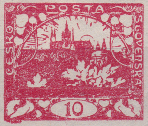
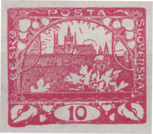
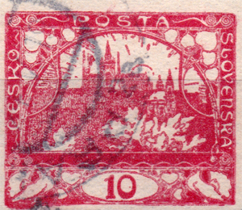
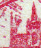
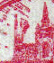
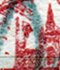
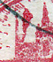
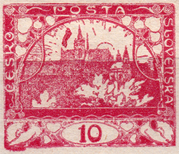
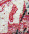

10h rojo – evolución de la posición 91 de la 4.ª plancha de impresión
El 10h rojo (POFIS n.º 5) fue, junto con el 5h verde claro (3), el primer sello de la recién nacida Checoslovaquia, emitido el 18 de diciembre de 1918 (la impresión propiamente dicha comenzó el 16 de diciembre de 1918). La literatura cita una tirada de más de 110 millones de ejemplares; solo el 1 % de la tirada se perforó oficialmente en la medida 11½ (D, dentado de línea).
Debido a la tecnología tipográfica, en la que prácticamente cada posición de un pliego de 100 sellos es poco menos que un original, aparece una gran cantidad de defectos. Algunos defectos de plancha llamativos los seleccionó el Dr. Kubát para la Monografía de los sellos checoslovacos (1968) – los llamados defectos monográficos.
Uno de ellos es el popular «reloj» de la posición 91 del 10h rojo. Se trata de un defecto del negativo, es decir, de la primera fase de fabricación de la plancha de impresión – por eso el «reloj» se encuentra en las 4 planchas de impresión de este valor.

Durante la impresión se decidió retocar esta mancha blanca en las 4 planchas. La Monografía dice que en la primera plancha la depresión se rellenó con metal; en la segunda y la tercera se rellenó parcialmente y se igualó aplastando ambas torres. Este artículo describe la evolución del retoque en la cuarta plancha de impresión. El Dr. Kubát escribe que el defecto se eliminó solo aplastando fuertemente las torres, lo que las deformó dándoles forma de tijeras.

Desde mi punto de vista, este procedimiento es imposible – en la zona de las dos primeras torres no hay metal suficiente para que surja el efecto de tijeras. Personalmente creo que se recortó toda la superficie de las dos primeras torres de la iglesia y se pegó una pieza nueva con la horquilla, es decir, con el retoque. A esta idea me lleva también el hecho de que los rayos situados a la izquierda y por encima de la primera torre son notablemente más cortos en la variante con horquilla y las torres no llegan a tocarlos. Los sellos con el defecto de plancha y también los que llevan el retoque en forma de horquilla aparecen con relativa frecuencia.
Frente a la Monografía, el catálogo POFIS recoge 2 variantes de retoque sin más explicación; la horquilla es aquí el retoque n.º 2. Así es como se ve el retoque n.º 1 según este catálogo («la azada»):

La aparición de sellos con esta variante es muy rara. Pero ¿se trata realmente de una corrección, de un retoque? ¿No es más bien un daño del retoque original en forma de horquilla? Detalles de las dos primeras torres en varios ejemplares:




Aquí se ve con claridad la evolución de toda la zona en torno a las dos primeras torres de la iglesia. En mi opinión no se trata de otro retoque, sino de una fase evolutiva de la horquilla original – el único retoque que se realizó en 91/IV. La evolución, sin embargo, continuó: a medida que la plancha se iba forzando, una parte de la pieza pegada durante el retoque se desprendió y se deformó:

Hasta ahora solo he visto tres ejemplares con esta forma de daño. Supongo que se trata de una fase de la impresión de la cantidad final de pliegos. Es posible que existan también sellos de la fase en la que la pieza pegada se desprendió por completo de la plancha y las torres faltan.

Todas las fases evolutivas de la zona de la primera y la segunda torre de la iglesia en 91/IV:
Agradeceré comentarios constructivos y otras propuestas de escenarios sobre cómo pudo desarrollarse este sello tan interesante.